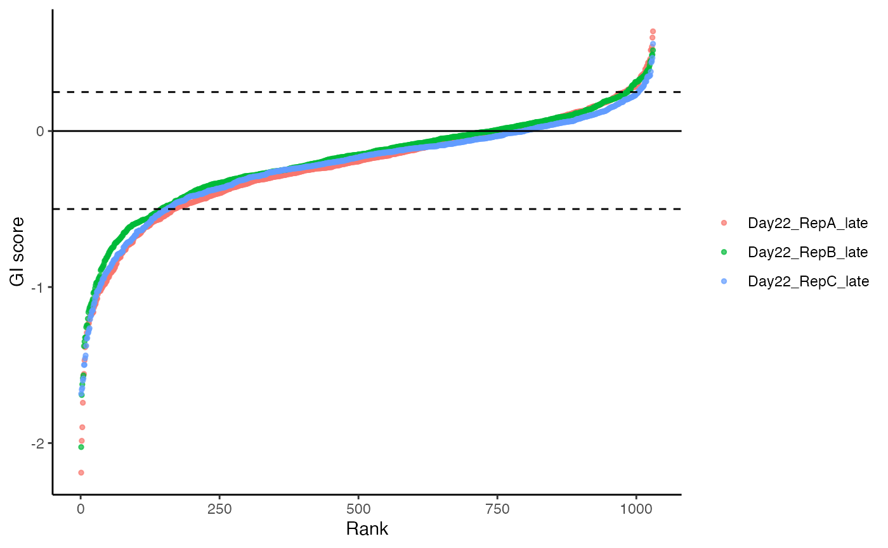
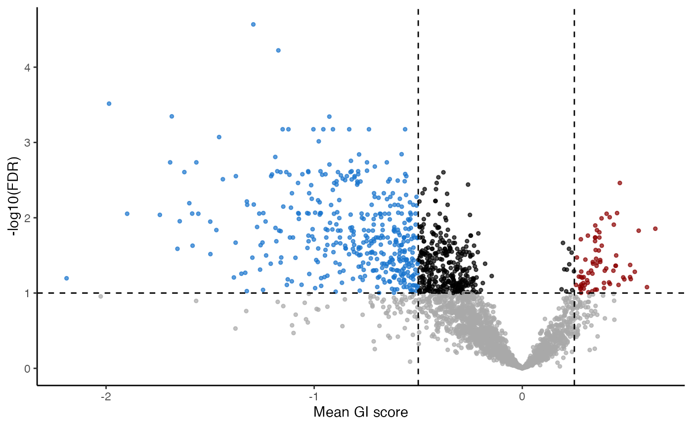

Quick Start for gimap
For more background on gimap and the calculations done here, read here
library(gimap)
#> Error in get(paste0(generic, ".", class), envir = get_method_env()) :
#> object 'type_sum.accel' not foundlibrary(dplyr)
#>
#> Attaching package: 'dplyr'
#> The following objects are masked from 'package:stats':
#>
#> filter, lag
#> The following objects are masked from 'package:base':
#>
#> intersect, setdiff, setequal, unionSet Up
First let’s create a folder we will save files to.
example_data <- get_example_data("count")
#> [1mRows: [22m[34m33170[39m [1mColumns: [22m[34m8[39m
#> [36m──[39m [1mColumn specification[22m [36m────────────────────────────────────────────────────────[39m
#> [1mDelimiter:[22m "\t"
#> [31mchr[39m (3): id, seq_1, seq_2
#> [32mdbl[39m (5): Day00_RepA, Day05_RepA, Day22_RepA, Day22_RepB, Day22_RepC
#>
#> [36mℹ[39m Use `spec()` to retrieve the full column specification for this data.
#> [36mℹ[39m Specify the column types or set `show_col_types = FALSE` to quiet this message.Setting up data
We’re going to set up three datasets that we will provide to the
set_up() function to create a gimap dataset
object.
counts- the counts generated from pgPENpg_ids- the IDs that correspond to the rows of the counts and specify the constructsample_metadata- metadata that describes the columns of the counts including their timepoints
counts <- example_data %>%
select(c("Day00_RepA", "Day05_RepA", "Day22_RepA", "Day22_RepB", "Day22_RepC")) %>%
as.matrix()pg_id are just the unique IDs listed in the same
order/sorted the same way as the count data.
Sample metadata is the information that describes the samples and is sorted the same order as the columns in the count data.
sample_metadata <- data.frame(
col_names = c("Day00_RepA", "Day05_RepA", "Day22_RepA", "Day22_RepB", "Day22_RepC"),
day = as.numeric(c("0", "5", "22", "22", "22")),
rep = as.factor(c("RepA", "RepA", "RepA", "RepB", "RepC"))
)We’ll need to provide example_counts,
pg_ids and sample_metadata to
setup_data().
It’s ideal to run quality checks first. The run_qc()
function will create a report we can look at to assess this.
run_qc(gimap_dataset,
output_file = "example_qc_report.Rmd",
overwrite = TRUE,
quiet = TRUE)You can take a look at an example QC report here.
gimap_dataset <- gimap_dataset %>%
gimap_filter() %>%
gimap_annotate(cell_line = "HELA") %>%
gimap_normalize(
timepoints = "day"
) %>%
calc_gi()
#> Annotating Data
#> [1mRows: [22m[34m1884[39m [1mColumns: [22m[34m3[39m
#> [36m──[39m [1mColumn specification[22m [36m────────────────────────────────────────────────────────[39m
#> [1mDelimiter:[22m ","
#> [31mchr[39m (3): gene, gene_symbol, entrez_id
#>
#> [36mℹ[39m Use `spec()` to retrieve the full column specification for this data.
#> [36mℹ[39m Specify the column types or set `show_col_types = FALSE` to quiet this message.
#> Normalizing Log Fold Change
#>
#> Calculating Genetic Interaction scoresExample output
Genetic interaction is calculated by:
rep- indicates which sample from the original the data is from. Note the pretreatment is used for calculation and its statistics are not reported.pgRNA_target- what gene(s) were targeted by this the original pgRNAs for these datamean_expected_cs- the average expected genetic interaction scoremean_gi_score- the average observer genetic interaction scoretarget_type- describes whether the CRISPR design is targeting two genes (“gene_gene”), or a gene and a non targeting control (“gene_ctrl”) or a targeting control and a gene (“ctrl_gene”).p_val- p values from the testing whether a double knockout construct is significantly different in its genetic interaction score from single targets.
fdr- False discovery rate corrected p values
| rep | pgRNA_target | mean_expected_cs | mean_observed_cs | mean_gi_score | target_type | p_val | fdr |
|---|---|---|---|---|---|---|---|
| Day22_RepA_late | NDEL1_NDE1 | -1.8731292 | -2.673450 | -1.292412 | gene_gene | 0.0e+00 | 0.0000270 |
| Day22_RepA_late | PFN2_PFN1 | -1.5811362 | -2.360606 | -1.172104 | gene_gene | 1.0e-07 | 0.0000598 |
| Day22_RepA_late | CNOT8_CNOT7 | -0.2525986 | -2.298083 | -1.985598 | gene_gene | 9.0e-07 | 0.0003051 |
| Day22_RepC_late | CNOT8_CNOT7 | -0.6030327 | -2.222123 | -1.684182 | gene_gene | 4.0e-07 | 0.0004501 |
| Day22_RepC_late | SHMT2_SHMT1 | -1.0214662 | -1.737076 | -0.927188 | gene_gene | 9.0e-07 | 0.0004535 |
| Day22_RepC_late | AKIRIN1_AKIRIN2 | -1.7072333 | -2.379270 | -1.123690 | gene_gene | 5.9e-06 | 0.0006682 |
Plot the results
You can remove any samples from these plots by altering the
reps_to_drop argument.



Here’s how you can save plots like the above.
Saving data to a file
We can save all these data as an RDS or the genetic interaction scores themselves to a tsv file.
Session Info
This is just for provenance purposes.
sessionInfo()
#> R version 4.4.0 (2024-04-24)
#> Platform: x86_64-apple-darwin20
#> Running under: macOS 15.1.1
#>
#> Matrix products: default
#> BLAS: /Library/Frameworks/R.framework/Versions/4.4-x86_64/Resources/lib/libRblas.0.dylib
#> LAPACK: /Library/Frameworks/R.framework/Versions/4.4-x86_64/Resources/lib/libRlapack.dylib; LAPACK version 3.12.0
#>
#> locale:
#> [1] en_US.UTF-8/en_US.UTF-8/en_US.UTF-8/C/en_US.UTF-8/en_US.UTF-8
#>
#> time zone: America/New_York
#> tzcode source: internal
#>
#> attached base packages:
#> [1] stats graphics grDevices utils datasets methods base
#>
#> other attached packages:
#> [1] dplyr_1.1.4 gimap_0.1.0
#>
#> loaded via a namespace (and not attached):
#> [1] sass_0.4.9 generics_0.1.3 tidyr_1.3.1 stringi_1.8.4
#> [5] hms_1.1.3 digest_0.6.37 magrittr_2.0.3 evaluate_1.0.1
#> [9] grid_4.4.0 timechange_0.3.0 RColorBrewer_1.1-3 fastmap_1.2.0
#> [13] jsonlite_1.8.9 backports_1.5.0 purrr_1.0.2 scales_1.3.0
#> [17] textshaping_0.4.1 jquerylib_0.1.4 cli_3.6.3 crayon_1.5.3
#> [21] rlang_1.1.4 bit64_4.5.2 munsell_0.5.1 withr_3.0.2
#> [25] cachem_1.1.0 yaml_2.3.10 parallel_4.4.0 tools_4.4.0
#> [29] tzdb_0.4.0 colorspace_2.1-1 ggplot2_3.5.1 broom_1.0.7
#> [33] curl_6.0.1 vctrs_0.6.5 R6_2.5.1 lifecycle_1.0.4
#> [37] lubridate_1.9.4 snakecase_0.11.1 stringr_1.5.1 bit_4.5.0.1
#> [41] fs_1.6.5 htmlwidgets_1.6.4 vroom_1.6.5 ragg_1.3.3
#> [45] janitor_2.2.0 pkgconfig_2.0.3 desc_1.4.3 pkgdown_2.1.1
#> [49] pillar_1.10.0 bslib_0.8.0.9000 gtable_0.3.6 glue_1.8.0
#> [53] systemfonts_1.1.0 xfun_0.49 tibble_3.2.1 tidyselect_1.2.1
#> [57] rstudioapi_0.17.1 knitr_1.49 farver_2.1.2 htmltools_0.5.8.1
#> [61] labeling_0.4.3 rmarkdown_2.29 readr_2.1.5 pheatmap_1.0.12
#> [65] compiler_4.4.0